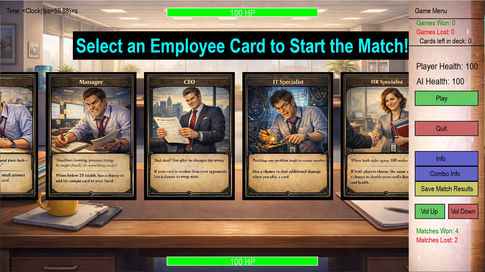
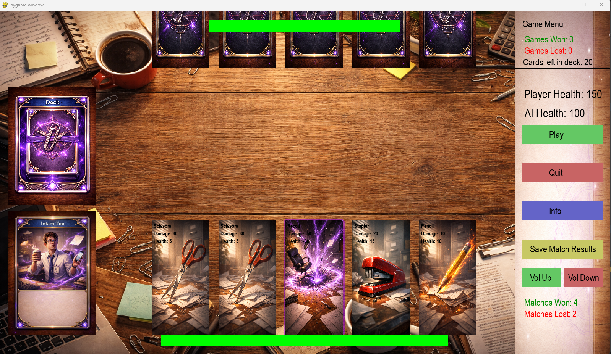

This session focused primarily on improving the visual presentation of the game and expanding the combo system. Alongside that, the employee perk system was completed and additional cleanup work was done throughout the codebase.

Updated visuals and employee selection screen. (All art created by AI)
At this stage, the project is starting to feel cohesive. Systems are in place, and the game is becoming more playable with each iteration.
The most noticeable improvement is the visual overhaul. All of the cards have been redesigned, and additional text elements were added to improve clarity during gameplay.
Each card class now has its own distinct color, which helps visually separate mechanics and makes the game easier to read during play.
The combo system was also expanded significantly. New combinations were added, increasing the number of possible interactions. These still require some balancing and refinement.
All employee cards now have active effects. Playing an employee’s card provides a small bonus, adding another layer of strategy to decision-making.
Gameplay showing updated visuals and expanded combo system.(All are created by AI)
Most of the core systems are now in place, but the combo system still needs adjustment. With the expanded card pool and the same hand size, combos can feel too inconsistent.
One potential solution is removing the requirement that combos must be played in a strict order. Allowing combos to trigger regardless of sequence would make them more accessible and improve the overall flow of the game.
The employee system feels complete from a design perspective. Moving forward, the focus will likely shift toward balance and player feedback.
Another area for improvement is sound. Adding stronger audio feedback would help reinforce player actions and make the game feel more responsive.
The main challenge right now is bringing the game to a point where it feels ready for other people to play. It is close, but there are still small details that need to be addressed before that happens.
The game is now highly playable. After extensive testing, only a few game-ending bugs were encountered, and those have been resolved.
Some minor visual issues remain, but these are expected at this stage, especially when working within Pygame.
The project is nearing completion. The goal is to wrap up the remaining work within the next week and begin planning the next project.
Steady progress forward.
The past few weeks were focused on fixing smaller bugs and finishing one of the game's largest systems: the employee perk system.
A couple of minor text bugs were resolved during this time. Some messages were triggering when they shouldn’t have been, which turned out to be an easy fix once the conditions were corrected.
The majority of development time, however, was spent completing the employee system. Working through this system taught me a lot about implementing trigger-based mechanics and how they can drive gameplay events.
The employee system is now fully implemented.
Employees now have perks that trigger when specific events occur during gameplay. Four of the employees currently have their perks implemented, and the remaining ones will be added later. Now that the system framework is in place, adding additional perks should be much easier.
Employee-specific cards have also been integrated into the deck. Each employee now has a unique card tied to them, and the employee system itself is functionally complete. The next phase will be refining and balancing these effects.
In addition to the employee system, the card pool was expanded with:
At this point, the game is approaching feature completion.
The core systems are now in place:
Because of this, development will likely shift away from adding new mechanics and toward balancing and AI improvements.
One possible addition is a simple progression or level system, but the primary focus going forward will be refining what already exists rather than expanding the scope of the project.
The biggest challenge during this period was designing and implementing the trigger system used by employee perks.
It took some time to fully understand how to structure the triggers and apply them effectively within the game. With the help of documentation, online resources, and AI assistance, I eventually arrived at a system that works well and should be easy to expand later.
The next major challenge will be improving the AI system.
Ideally, the AI should have multiple difficulty levels:
Steady progress forward.
This session focused on code cleanup and structural refactoring rather than adding new gameplay features.
Originally, I intended to remove unused variables and tidy up sections of the file. As I worked through it, I realized the project file had grown large enough that it was becoming difficult to navigate efficiently.
Early gameplay footage showcasing combo system and refactored structure.
The Card class and the EmployeeCard class were moved into their own separate files.
Steady progress forward.
This session was focused on expanding and restructuring the combo system.
New combo variations were introduced, including Double and Triple bonuses and a health bonus triggered when three cards start with the letter “P.”
Steady progress.
This session focused on establishing foundational structure for both the studio and the game itself.

Gameplay screenshot. Visual card art generated using AI tools.
Steady progress forward.